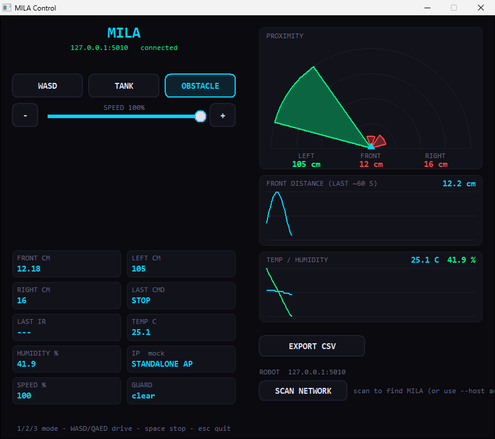
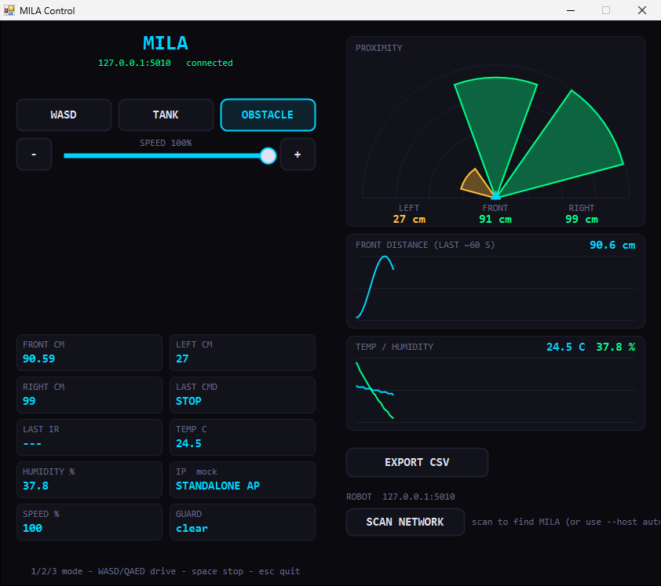
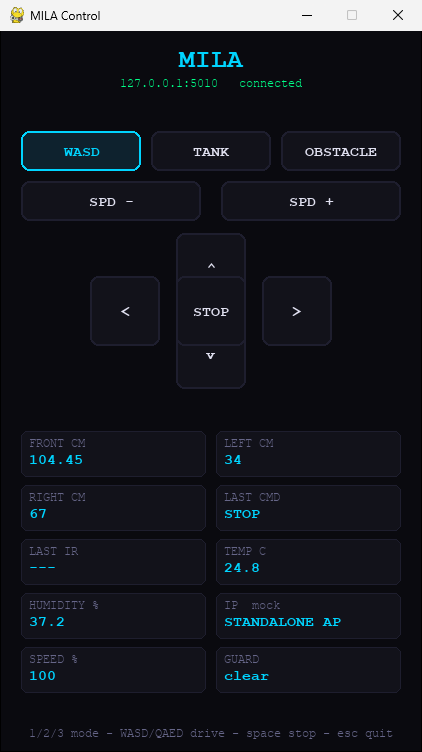
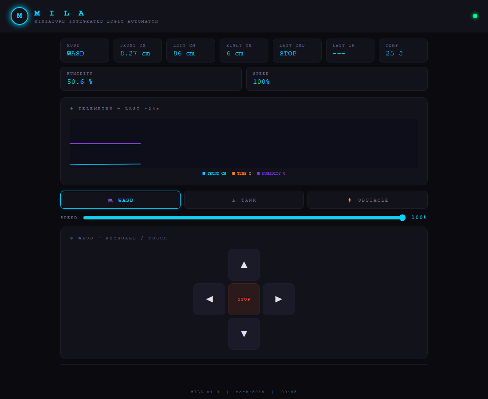

Overview
A tiny robot with a lot going on
Three ways to steer
Drive it like a car (WASD), control each track like a tank, or let it roam on its own in obstacle mode.
Live telemetry
An ultrasonic sensor on a servo reads front, left and right distances, alongside temperature, humidity and the last IR remote key.
WiFi dashboard
The ESP8266 serves a web dashboard on port 5010. Join MILA's access point, or her fleet on NORA's network.
Collision guard
In manual modes the robot force-stops if it's about to hit something, and a watchdog stops it if your connection drops.
Adjustable power
Cycle 100 / 75 / 50 / 25 % presets from the IR remote, or set an exact value with the dashboard slider.
Desktop controllers
Native controllers in seven languages, with radar, live graphs, gamepad support and one-click network discovery.
Hardware
What it's built from
- 01 Small tank robot chassis
- 02 Arduino Bluetooth (integrated ESP8266)
- 03 2S 18650 battery pack
- 04 L298N motor driver
- 05 MG95 servo
- 06 Ultrasonic sensor
- 07 5 V DC motors
- 08 RGB LED
- 09 Temperature & humidity sensor
- 10 IR receiver
Drive modes
Pick how MILA moves
Car-style driving
Forward, back, left and right with WASD or the arrow keys. Space stops.
Independent tracks
Q/A drive the left track forward and back, E/D the right. Great for precise turns.
Autonomous
MILA drives on her own, scanning with the servo-mounted sensor and turning away from whatever is in the way.
Quick start
Get driving in a few minutes
Flash the firmware from scripts/esp8266 and scripts/MILA using the Arduino IDE, then power the robot on and join her WiFi network. MILA hosts her own access point at 192.168.4.1.
Open the dashboard in any browser, or use a desktop controller:
# Python controller: creates a venv, installs deps, launches it $ ./run.sh # macOS / Linux / Git Bash > run.bat # Windows (cmd) > .\run.ps1 # Windows (PowerShell) # Point at a specific robot, or let it find her for you $ ./run.sh --host 192.168.4.1 --port 5010
If MILA joined NORA's network (fleet mode), she won't be at 192.168.4.1. Press SCAN NETWORK in the C++, C# or F# controller, or start it with --host auto.
Desktop controllers
Same robot, your language
Each controller lives in scripts/ and has a matching build-and-run script in .sh, .bat and .ps1 form.
| Language | UI toolkit | Run | Radar & graphs | Gamepad |
|---|---|---|---|---|
| Python | pygame | run.sh | – | – |
| C++ | Win32 / GDI | scripts/run-cpp.* | ✓ | ✓ |
| C# | WinForms | scripts/run-csharp.* | ✓ | ✓ |
| F# (preview) | WinForms | scripts/run-fsharp.* | ✓ | ✓ |
| Rust | egui | scripts/run-rust.* | – | – |
| Go | Ebitengine | scripts/run-go.* | – | – |
| Julia | GLMakie | scripts/run-julia.* | – | – |
Highlights of the C++, C# and F# controllers
Proximity radar
Left, front and right distances drawn as coloured wedges: green when clear, amber under 50 cm, red under 20 cm.
Live graphs & CSV export
Distance, temperature and humidity plotted over the last minute, with a one-click CSV of the whole session.
Gamepad support
Xbox controllers via XInput: stick or D-pad to drive, triggers for speed, A to stop, bumpers to switch mode.
Network discovery
Scan your subnets for MILA and connect with a click. The last host, port and mode are remembered.
Analyze a session with Fortran
Press EXPORT CSV in a controller to save a run, then let scripts/fortran/telemetry_stats.f90 summarise it: sample rate, time in each drive mode, per-sensor min / max / mean / standard deviation, outliers, connection gaps and close calls. Needs gfortran; it picks your newest export automatically.
$ scripts/run-fortran.sh # or run-fortran.bat / run-fortran.ps1 Samples: 200 Duration: 0:01:47 (107.0 s) Modes: wasd 120 (60.0%) tank 80 (40.0%) Sensor n missing min max mean stddev outliers Front dist cm 200 0 8.50 400.00 62.36 37.83 1 Left dist cm 180 20 40.00 100.00 70.61 21.06 0 Close calls (front < 20 cm): 8 samples (4.0%) Connection: 1 gap(s) longer than 2.0 s (longest 8.0 s)
Teach MILA to drive herself
Drive by hand (IR remote, keyboard, gamepad or the dashboard), press EXPORT CSV, and scripts/fortran/make_dataset.f90 turns your sessions into an imitation-learning dataset: what the ultrasonic sensor saw, paired with what you were doing.
Human driving only
Obstacle mode (she drives herself) and moments the collision guard overrode you are dropped.
Labels from the motors
The Arduino reports the real left/right track state, so IR driving is captured too. Nine classes, from STOP to R_BWD.
Sensible features
Front distance, its change, a 5-sample average and minimum, speed and mode. No-echo readings are flagged and carried forward.
No leakage
Each export is one session, and the last 20 % of every session is marked as validation.
$ scripts/run-dataset.sh # or run-dataset.bat / run-dataset.ps1 Rows kept: 252 (train 220, val 32) dropped, robot was driving itself (obstacle mode): 25 rows dropped, collision guard overrode the human: 3 rows Action distribution (kept rows): 0 STOP 31 (12.3%) 1 FORWARD 158 (62.7%) 3 LEFT 63 (25.0%)
Reflash both boards to get the motor columns. Older exports still work, but IR driving is invisible in them.
Test without a robot
A mock MILA lives in scripts/sim. It serves the same endpoints as the firmware with simulated sensor data:
$ scripts/run-sim.sh $ scripts/run-cpp.sh --host 127.0.0.1
Screens
The controllers
Running against MockMila, the simulator in scripts/sim, so the telemetry is live.



